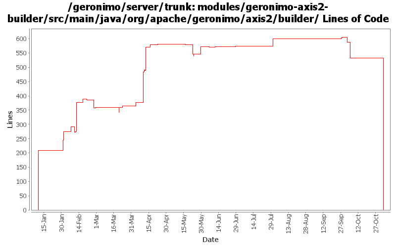

[root]/modules/geronimo-axis2-builder/src/main/java/org/apache/geronimo/axis2/builder

| Author | Changes | Lines of Code | Lines per Change |
|---|---|---|---|
| Totals | 54 (100.0%) | 1653 (100.0%) | 30.6 |
| dims | 25 (46.3%) | 1247 (75.4%) | 49.8 |
| gawor | 18 (33.3%) | 347 (21.0%) | 19.2 |
| jdillon | 3 (5.6%) | 28 (1.7%) | 9.3 |
| linsun | 1 (1.9%) | 26 (1.6%) | 26.0 |
| jgenender | 2 (3.7%) | 4 (0.2%) | 2.0 |
| dwoods | 1 (1.9%) | 1 (0.1%) | 1.0 |
| prasad | 4 (7.4%) | 0 (0.0%) | 0.0 |
GERONIMO-3565. Modules distributed amongst framework/modules and plugins
0 lines of code changed in 4 files:
got ridd of initContextRoot() method that wasn't thread safe (GERONIMO-3495)
1 lines of code changed in 1 file:
making axis2 intergration more modular: separated ejb bits from servlet bits.
48 lines of code changed in 2 files:
fix minor bugs discovered by FindBugs
3 lines of code changed in 1 file:
making cxf intergration more modular: separated ejb bits from servlet bits.
2 lines of code changed in 2 files:
dos->unix
104 lines of code changed in 1 file:
let each module have its own ClientConfiguration (might need to scope it more in the future)
27 lines of code changed in 1 file:
indicate when we don't actaully use the descriptors. will make things less confusing
2 lines of code changed in 1 file:
clean up
1 lines of code changed in 1 file:
untabify plus other improvements
27 lines of code changed in 1 file:
port name is not necessary so pass only when specified in the dd
1 lines of code changed in 1 file:
Fix for GERONIMO-3197 Axis2: don't call wsgen tool if BindingType is HTTP_Binding
26 lines of code changed in 1 file:
set proper service and port name
2 lines of code changed in 1 file:
revert some changes
7 lines of code changed in 1 file:
pass service name hint
2 lines of code changed in 1 file:
switched axis2 to use the common wsdl generator code
35 lines of code changed in 1 file:
GERONIMO-3124 Switch Axis2 stack back to axis2-saaj from Sun SAAJ Impl
1 lines of code changed in 1 file:
forgot to switch from axis2-saaj to saajri jar
3 lines of code changed in 1 file:
Fix for GERONIMO-3100 - Axis2: remove hardcoded 12 jars in Axis2BuilderUtil
35 lines of code changed in 2 files:
Fix for GERONIMO-3092 - Axis2: after wsgen tool, need to scan the directory for the generated wsdl file
113 lines of code changed in 2 files:
Fix for (GERONIMO-3094) Axis2: need to build the classpath and pass it onto wsgen
39 lines of code changed in 2 files:
oops! i should call the static newInstance method of the WSToolsObjectFactory class
23 lines of code changed in 1 file:
Let's see if we can get rid of NCDFE for com/sun/mirror/apt/AnnotationProcessorFactory by explicitly creating a classloader (with system class loader as parent).
49 lines of code changed in 2 files:
drop the SNAPSHOT for jaxws rt and tools
2 lines of code changed in 1 file:
Fix for GERONIMO-2988 - Axis2: needs to support optional wsdl file
110 lines of code changed in 2 files:
applied patch for G3045
62 lines of code changed in 1 file:
applied GERONIMO-3005 bug fix
23 lines of code changed in 1 file:
Add/update headers
28 lines of code changed in 2 files:
oops! forgot to update these (to remove jaxb generated code)
31 lines of code changed in 1 file:
Fix for GERONIMO-2913 - minor changes to JettyEJBWebServiceContext and TomcatEJBWebServiceContext for Axis2
Fix for GERONIMO-2914 - Axis2: a few changes to set the servicepath, contextroot correctly in EJB to allow getWSDL() test working correctly
Fix for GERONIMO-2894 - Restructure geronimo-axis2 code to split between EJB and POJO containers
Thanks a ton Lin.
2 lines of code changed in 1 file:
GERONIMO-2882 patch committed
4 lines of code changed in 2 files:
Fix for GERONIMO-2876 - Initial web service EJB support for Axis2
21 lines of code changed in 1 file:
(GERONIMO-2858) Applied condition change from Jarek, only change to use props[''] syntax when default not needed
0 lines of code changed in 1 file:
Fix for GERONIMO-2842 - Geronimo Axis2 - JAXWS Web Services are not working for WSDL provided situation
Fix for GERONIMO-2845 - Axis2 JAXWS handle document style WSDLs
27 lines of code changed in 1 file:
Initial port of the serviceref and handler chain support (needs a lot of work/testing!)
109 lines of code changed in 2 files:
- Ability to specify the ws impl from a system property, example:
-Djavax.xml.ws.spi.Provider=org.apache.axis2.jaxws.spi.Provider
- Default is CXF as per last email from Jarek. So if the system property
is absent, then the first deployer will kick in (which is cxf)
- Ran into a class loader issue because wsdl4j is loaded by multiple
class loaders, so move it into webservices-common config.
30 lines of code changed in 1 file:
Get deployment and ?wsdl to work when wsdl is absent
19 lines of code changed in 1 file:
Fix for GERONIMO-2798 - Axis2 Integration - User JAXWS common module to implementation
149 lines of code changed in 1 file:
Fix for GERONIMO-2789 - allow users to specify something other than services in url-pattern in axis2 jax-ws wars
32 lines of code changed in 1 file:
Fix for GERONIMO-2776 - Axis2 Integration - Replace RPCMessageReciever with JAXWSMessageReciever
245 lines of code changed in 1 file:
(1 more)